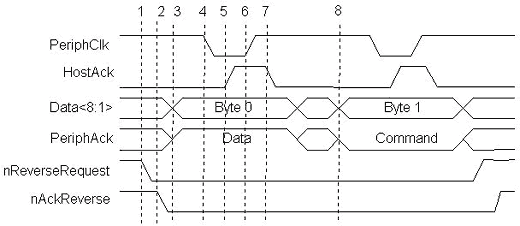

The Extended Capability Port, or ECP, protocol was proposed by Hewlett Packard and Microsoft as an advanced mode for communication with printer and scanner type peripherals. Like the EPP protocol, ECP provides for a high performance bi-directional communication path between the host adapter and the peripheral.
The ECP protocol provides the following cycle types in both the forward and reverse directions:
The command cycles are divided into 2 types, Run-Length Count and Channel address.
Unlike EPP, when the ECP protocol was proposed, a standard register implementation was also proposed. This can be found in the Microsoft document "The IEEE 1284 Extended Capabilities Port Protocol and ISA Interface Standard" available from Microsoft Corp. This document defines features that are implementation specific which the IEEE 1284 standard could not address. These features include Run_Length_Encoding (RLE) data compression for the host adapters, FIFOs for both the forward and reverse channels, and DMA as well as programmed I/O for the host register interface.
The RLE feature enables real time data compression that can achieve compression ratios up to 64:1. This is particularly useful for printers and scanners that are transferring large raster images that have large strings of identical data. In order for the RLE mode to be enabled both the host and the peripheral must support it.
Channel addressing is, conceptually, a little different than the EPP addressing. Channel addressing is intended to be used to address multiple logical devices within a single physical device. Think of this in terms of a new multi-function device such as FAX/Printer/Modem. Within one physical package, having a single parallel port attached, there is a printer, fax and modem. Each of these separate functions can be thought of as separate logical devices within the same package. Using the ECP channel addressing to access each of these devices, you could receive data from the modem data device while the printer data channel is busy processing a print image. With the compatibility mode protocol, if the printer gets busy then no more communication can occur until the printer data channel if free. With ECP, the software driver simply addresses another channel and communication can continue.
As with the other 1284 modes, the ECP protocol redefines the SPP signals to be more consistent with the ECP handshake. Table 1 describes these signals.
| SPP Signal | ECP Mode Name | In/Out | Description -- Signal usage when in ECP Mode data transfer |
|---|---|---|---|
| nSTROBE | HostClk | Out | Used with PeriphAck to transfer data or address information in the forward direction. |
| nAUTOFEED | HostAck | Out | Provides Command/Data status in the forward direction. Used with PeriphClk to transfer data in the reverse direction. |
| nSELECTIN | 1284Active | Out | Set high when host is in a 1284 transfer mode. |
| nINIT | nReverseRequest | Out | Driven low to put the channel in reverse direction. |
| nACK | PeriphClk | In | Used with HostAck to transfer data in the reverse direction. |
| BUSY | PeriphAck | In | Used with HostClk to transfer data or address information in the forward direction. Provides Command/Data status in the reverse direction. |
| PE | nAckReverse | In | Driven low to acknowledge nReverseRequest. |
| SELECT | Xflag | In | Extensibility flag. |
| nERROR | nPeriphRequest | In | Set low by peripheral to indicate that reverse data is available. |
| Data[8:1] | Data[8:1] | Bi-Di | Used to provide data between the peripheral and host. |
Figure 1 shows two forward data transfer cycles. When HostAck is high it indicates that a data cycle is taking place. When HostAck is asserted low, a command cycle is taking place and the data represents either an RLE count or a Channel address. Bit 8, of the data byte is used to indicate RLE vs. Channel address. If bit 8 is 0, then bits 1-7 represent a Run_Length Count (0-127). If bit 8 is 1, then bits 1-7 represent a Channel address (0-127). Figure 6 shows a data cycle followed by a command cycle.
Figure 2 shows a reverse channel command cycle followed by a reverse channel data cycle. The I/O read or write strobes are not shown in these figures. This is because the ECP FIFOs are used to decouple the ISA data transfers, either DMA or programmed I/O, from the actual host/peripheral data transfers. It is this decoupling of the transfer states that makes the ECP protocol a "loosely coupled" protocol. The software driver does not know the exact state of the data transfers. If a large block is being transferred via DMA, the driver does not know if the 123rd byte is being transferred or the 342,201st byte. As in the case of printers, the software may not care. The only concern is whether the transfer was completed or not.

Forward Transfer phase transistions:
NOTE: Since ECP transfers are loosely coupled, with a FIFO possibly on both sides of the interface, it is important to note at which step the data is considered "transferred". This point occurs at step 4, when the HostClk goes high. At this time, the data should be clocked in to the peripheral, and any data counters updated. There is a condition in the ECP protocol that could cause the transfer to abort at between steps 3 and 4. In this case the data should not be considered to have been transferred.
Figure 2 shows another of the differences between the ECP and EPP protocols. With EPP, the software driver may intermix read and write operations without any overhead or protocol handshaking. With the ECP protocol, changes in the data direction must be negotiated. The host must request a reverse channel transfer by asserting nReverseRequest and then wait for the peripheral to acknowledge the request by asserting nAckReverse. Only then can a reverse channel data transfer take place. In addition, since the previous transfer may have been DMA driven, the host software must either wait for the DMA to complete, or interrupt the DMA, backflush the FIFO to determine the exact transferred byte count, and then request the reverse channel. This adds a fair amount of overhead with peripherals that require a lot of intermixed reading and writing of registers or small buffers.
Figure 2 -- ECP Reverse Data and Command Cycle
Reverse Transfer phase transistions: 
The Microsoft specification, "The IEEE 1284 Extended Capabilities Port Protocol and ISA Interface Standard", defines a common register interface for ISA based 1284 adapters with ECP. This specification also defines a number of operational modes that the adapter can operate under. Table 2 identifies these modes.
| Mode | Description |
|---|---|
| 000 | SPP mode |
| 001 | Bi-directional mode (Byte mode) |
| 010 | Fast Centronics |
| 011 | ECP Parallel Port mode |
| 100 | EPP Parallel Port mode (note 1) |
| 101 | (reserved) |
| 110 | Test mode |
| 111 | Configuration mode |
(note 1) This mode is implemented by the SMC FDC37C665/666 controller and is not defined by the ECP specification. Most 1284 I/O controllers implement the EPP mode in a similar fashion.
The register model for an ECP port is similar to that of the standard parallel port, but takes advantage of a significant design oddity of the ISA bus architecture. In the IBM compatible PC architecture, only the first 1024 I/O ports, or addresses, are used. This is the basic I/O space of 0x000h to 0x3ffh. In order to address this range of addresses, only 10 address bits are needed (AD0-9). In order to save cost, older PC's only drove and decoded these address bits on the ISA bus and therefore limited the available I/O space to these 1024 registers. Newer PC's, actually drive and decode more address bits, enabling a larger available I/O space. This creates, in effect, multiple "pages" of the first 1K I/O ports. A software driver can access these pages by adding 1024 (0x400h hex notation) to the base address being accessed. Therefore, addressing addresses 0x378h and 0x778h can access 2 registers on two separate pages, but be guaranteed not to interfere with any other installed ISA device. The advantage is that by using this "aliasing" effect, new cards can have "hidden" registers, thus expanding the available number of registers available, and still maintain compatibility with older ISA cards that only decode 10 address bits.
The ECP register model takes advantage of this and defines 6 registers that only require 3 actual I/O ports. Table 9 identifies these registers. Note that the register definition may be dependent upon the current mode of operation. The ECR register is the most important aspect of this register configuration. This is the register that is used to set the current operational mode. Additionally, this register can be used by software to determine if an ECP-capable port is installed in the PC. Detection software can try to access any ECR registers by adding 0x402h to the base address of the LPT ports identified in the BIOS LPT port table.
| Offset | Name | Read/Write | ECP Mode | Function |
|---|---|---|---|---|
| 000 | Data | R/W | 000-001 | Data Register |
| 000 | ecpAfifo | R/W | 011 | ECP Address FIFO |
| 001 | dsr | R/W | all | Status Register |
| 002 | dcr | R/W | all | Control Register |
| 400 | cFifo | R/W | 010 | Parallel Port Data FIFO |
| 400 | ecpDfifo | R/W | 011 | ECP Data FIFO |
| 400 | tfifo | R/W | 110 | Test FIFO |
| 400 | cnfgA | R | 111 | Configuration Register A |
| 401 | cnfgB | R/W | 111 | Configuration Register B |
| 402 | ecr | R/W | all | Extended Control Register |
This paper will not attempt to describe all the functions of the ECP registers. For information regarding the register usage and bit definitions, please refer to the Microsoft document or the I/O controller data sheet.
It should be noted that if the port is in either standard parallel port mode or bi- directional mode, then the first 3 registers behave exactly as a standard parallel port. This way, compatibility with older devices and device drivers is maintained.
Usage of this port is similar to that of the EPP port. An operational mode is written to the ecr register, and then data transfer is accomplished by writing or reading from the appropriate I/O port. All of the handshaking is automatically generated by the interface controller. The major difference is that the ECP port is meant to be driven by DMA rather than explicit I/O operations. Again, this is a loosely coupled interface that is targeted primarily at peripherals that interchange large blocks of data.